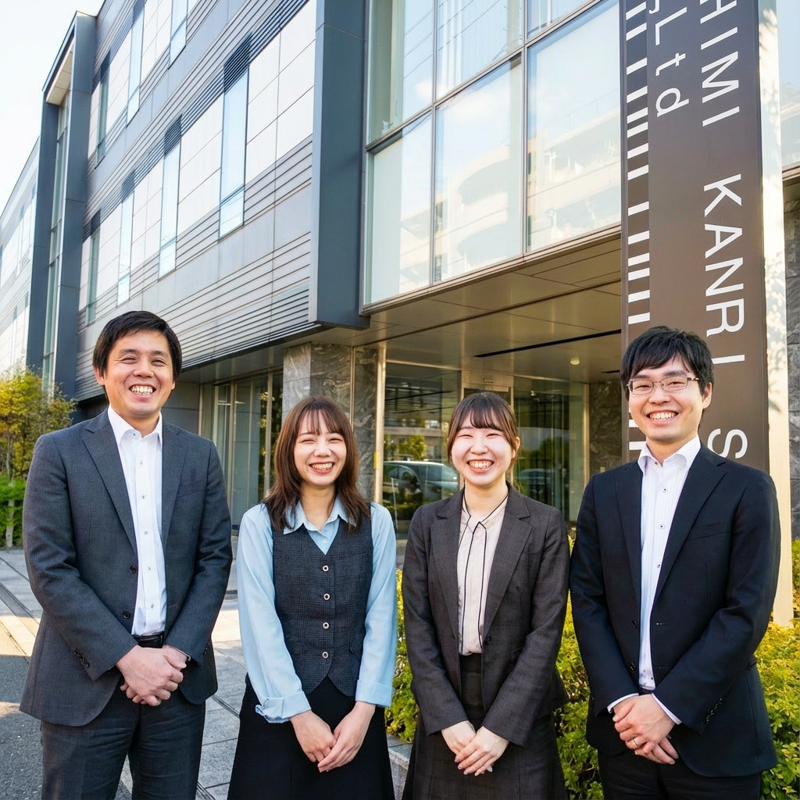

「安心の連鎖」を、つくり続ける
伏見管理サービスは1984年の設立以来、マンション管理という仕事を通じて、住まう方々の「安心」をつくり続けてきました。
マンション管理は、目立つ仕事ではありません。しかし、何百世帯もの暮らしを日々支える、社会になくてはならない仕事です。管理組合の総会運営、日常の修繕対応、長期修繕計画の策定——ひとつひとつの業務が、住民の方々の安心につながっています。
管理はもっと探求できる
私たちは「管理はもっと探求できる」と考えています。ただ建物を維持するだけではなく、住民同士のコミュニティを育み、資産価値を高め、次世代に引き継がれる住まいをつくること。それが私たちの目指すマンション管理の姿です。
デジタル技術の活用、業務プロセスの改善、専門資格の取得支援——伏見管理サービスでは、現状に満足せず常に「もっと良くできるはず」という姿勢で仕事に取り組んでいます。
求める人材像
私たちが一緒に働きたいのは、以下のような方です。
- 誠実に向き合える方 — 管理組合や住民の方々との信頼関係が、すべての基盤です
- 学び続ける意欲がある方 — 法律・建築・会計など、幅広い知識が求められる仕事です
- チームで成果を出せる方 — フロント・工事・総務が連携して初めて良い管理が実現します
- 長期的な視点を持てる方 — マンションは30年、50年と住み継がれるもの。長い目で考える力が大切です
安心して働ける環境
社員が安心して長く働ける環境づくりにも力を入れています。月平均残業3.4時間、有給取得率64%、育児休業取得率100%。資格取得支援制度では、管理業務主任者やマンション管理士などの取得を全面的にバックアップしています。
マンション管理という仕事に興味を持ってくださった方、ぜひ一度お話ししましょう。あなたの経験や想いを聞かせてください。
伏見管理サービス株式会社
代表取締役